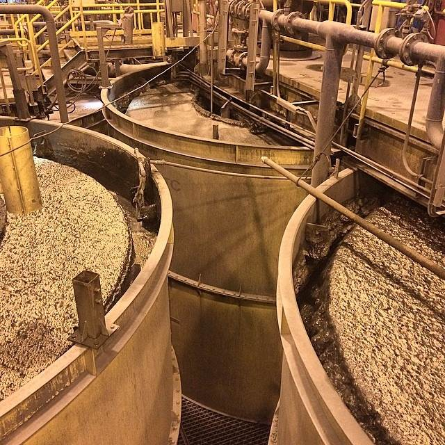
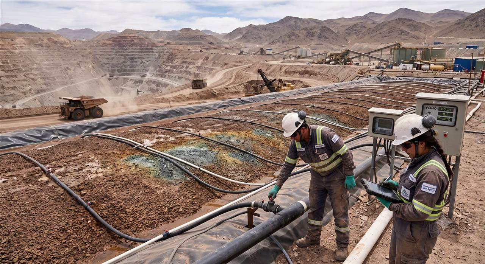
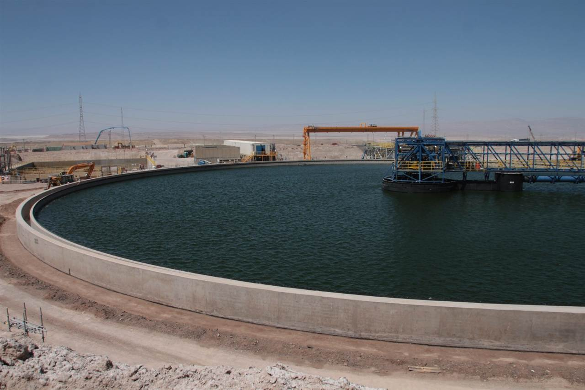
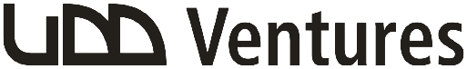

01
Flotación
Monitoreo de estabilidad, predicción de recuperación con contexto mineralógico y alertas tempranas de desviación del proceso.
RecuperaciónReactivosEspuma
Leemos las comunidades microbianas de la pulpa, el agua de proceso y el mineral de tu planta, y las convertimos en inteligencia operacional propietaria. Los indicadores que tu SCADA nunca te va a dar.
Trazabilidad completa del dato operacional
Proxies biológicos que anticipan cambios
Cada planta es distinta. Cada modelo también.
SCADA, laboratorio, LIMS, microbiología, historiadores, ERP. Cada sistema genera información crítica, pero trabajan como islas. Las decisiones se toman cuando el problema ya impactó la operación.
Planillas y lecturas puntuales.
Mineralogía y operación no se conectan.
Las desviaciones se detectan tarde.
Se corrige cuando ya impactó.
Sensores, SCADA y registros, digitalizados.
Mina, planta y biología en un modelo.
Proxies biológicos que adelantan el cambio.
Recomendaciones explicables, validadas por el equipo.
El verdadero pulso de tu operación está en la biología de la pulpa, el agua de proceso y el mineral: el indicador de cambio más rápido, y hasta hoy, el más ignorado.

Un flujo diseñado para adaptarse al nivel de digitalización de cada planta: con SCADA o con planillas.
Sensores, SCADA, planillas y registros manuales.
→ Entradas heterogéneasDatos unificados con contexto operacional.
→ Historial trazableGemelo digital calibrado con datos reales de la planta.
→ Hipótesis operacionalPrioriza desviaciones y decisiones a validar.
→ Acción informadaNo reemplaza al operador ni a la ingeniería de planta: entrega soporte predictivo, trazable y explicable.
Mina, planta y biología convergen en un solo motor de inteligencia.
Tres activos que se refuerzan entre sí. Ninguno es genérico. Los tres crecen con cada operación que se suma a la plataforma.
Integramos el flujo completo de cada planta desde la mineralogía de cabeza hasta el concentrado final en un modelo de trazabilidad total. Cada operación suma un activo de datos que no existe en ningún otro lugar.
DatosSecuenciamos, identificamos y cuantificamos las comunidades microbianas de la pulpa, el agua de proceso y el mineral. Caracterizamos lo que ya está vivo en la operación y lo convertimos en indicadores propietarios.
BiologíaGemelo digital, simulación what-if y agentes de IA entrenados con datos reales de cada faena. Cada predicción tiene data lineage hasta la variable de origen.
IA explicableTres activos. Una plataforma. Cero datos genéricos.
Pasá el cursor por cada proceso para ver qué monitoreamos.

Monitoreo de estabilidad, predicción de recuperación con contexto mineralógico y alertas tempranas de desviación del proceso.

Control de cinética, potencial redox y modelo predictivo de recuperación con alertas de acidificación temprana.

Monitoreo de estabilidad, espesado y trazabilidad de campañas con detección temprana de riesgo ambiental.
Universidades · Centros I+D · Empresas mineras · Partners tecnológicos.
Colaboramos con universidades y centros de investigación en microbiología aplicada a procesos mineros, co-publicación de hallazgos y formación de talento especializado.
Controlamos el ciclo completo de caracterización biológica —desde la toma de muestra en faena hasta el análisis bioinformático— sin depender de laboratorios externos.
Machine learning, modelos predictivos y agentes inteligentes para optimización de procesos mineros.
→Microbiología aplicada, bioinformática y metagenómica para caracterización de comunidades microbianas.
→Modelos operacionales con datos en tiempo real y simulación what-if.
→Sistemas multi-agente con RAG y LLM para recomendaciones trazables en lenguaje natural.
→Series temporales, detección de anomalías y optimización de variables operacionales.
→Integración de SCADA, laboratorio, IoT y metagenómica en un solo modelo.
→Experiencia en regulación minera, tecnología, operaciones de planta, finanzas y biotecnología.
Ingeniero Civil Ambiental, MBA en Innovación (UDD). Ex SEREMI de Minería y ex Director Regional de SERNAGEOMIN, Región de Coquimbo.
Ingeniero Industrial, MBA con track en Blockchain. Visión tecnológica, arquitectura de plataforma y producto.
Más de 20 años en el mercado de procesamiento de minerales y relaciones comerciales en el sector.
EMBA Universidad Austral. Empresario y emprendedor en LATAM, Board de Endeavor Argentina.
Doctor en Biotecnología, Magíster en Ciencias Botánicas. 30 años en genética vegetal, biología molecular y fisiología.
Especialista en procesos metalúrgicos, flotación y operaciones de planta.
Descubra cómo BetterMin transforma datos operacionales, mineralógicos y biológicos en decisiones que mejoran el desempeño de los procesos mineros.
